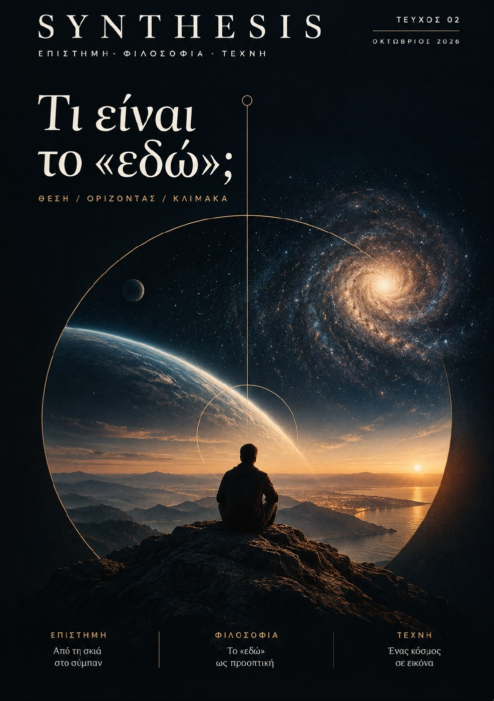
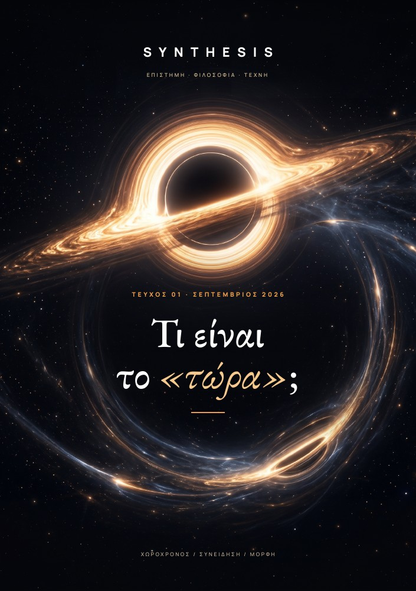

ΤΕΥΧΟΣ 02 · ΟΚΤΩΒΡΙΟΣ 2026
Τι είναι το «εδώ»;
Από τη σκιά του Ερατοσθένη στους χάρτες του σύμπαντος. Έξι κείμενα για τη μέτρηση, το βλέμμα και τη θέση μας στον κόσμο.
Περιεχόμενα τεύχουςΗ ΒΙΒΛΙΟΘΗΚΗ ΤΟΥ SYNTHESIS
Κάθε τεύχος έχει τη δική του θέση εδώ. Διάβασέ το online με το εξώφυλλο, τις εικόνες και τη σελιδοποίησή του, ή κράτησε το PDF στη βιβλιοθήκη σου.

ΤΕΥΧΟΣ 02 · ΟΚΤΩΒΡΙΟΣ 2026
Από τη σκιά του Ερατοσθένη στους χάρτες του σύμπαντος. Έξι κείμενα για τη μέτρηση, το βλέμμα και τη θέση μας στον κόσμο.
Περιεχόμενα τεύχους
ΤΕΥΧΟΣ 01 · ΣΕΠΤΕΜΒΡΙΟΣ 2026
Χωροχρόνος, συνείδηση και μορφή. Έξι διαδρομές από τη σχετικότητα και το βέλος του χρόνου μέχρι το ανθρώπινο ίχνος στο διάστημα.
Περιεχόμενα και άρθρα Η πρώτη online έκδοσηΜΙΑ ΕΚΔΟΣΗ ΠΟΥ ΠΑΡΑΜΕΝΕΙ
Τα αρχεία PDF διατηρούνται στην αρχική τους μορφή. Η online ανάγνωση εμφανίζει τις ίδιες σελίδες, ενώ τα άρθρα και τα διαδραστικά του site συνεχίζουν τη συζήτηση πέρα από το χαρτί.